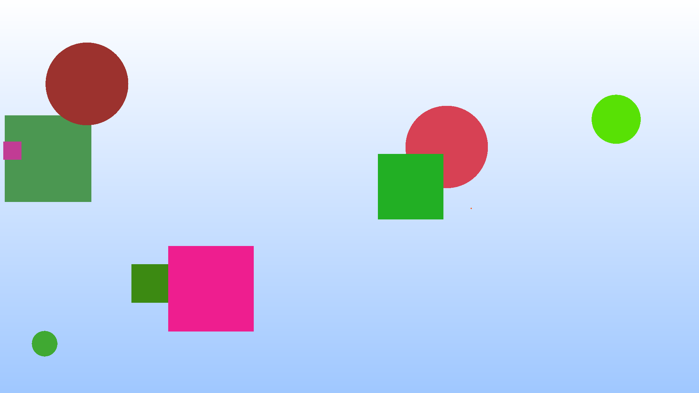
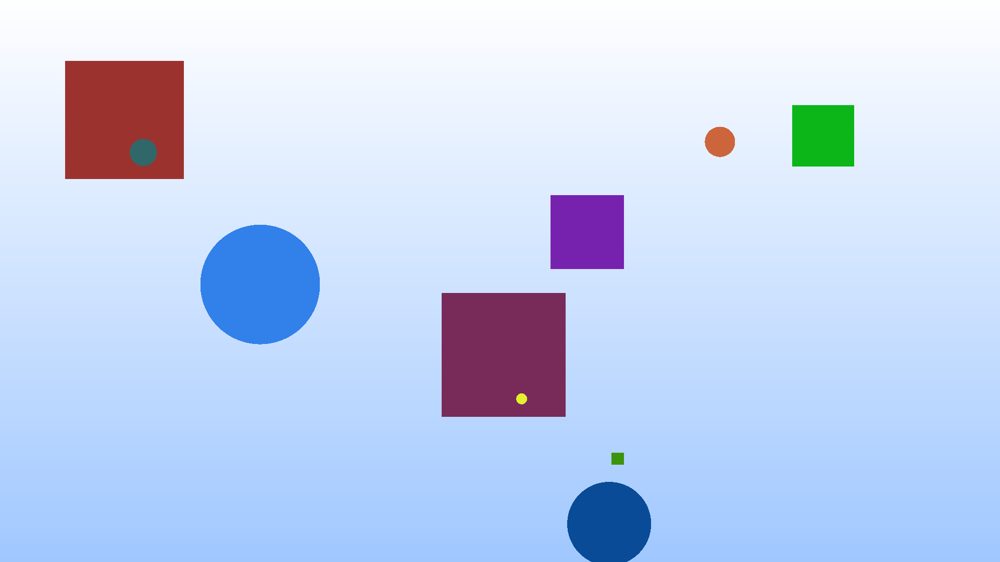
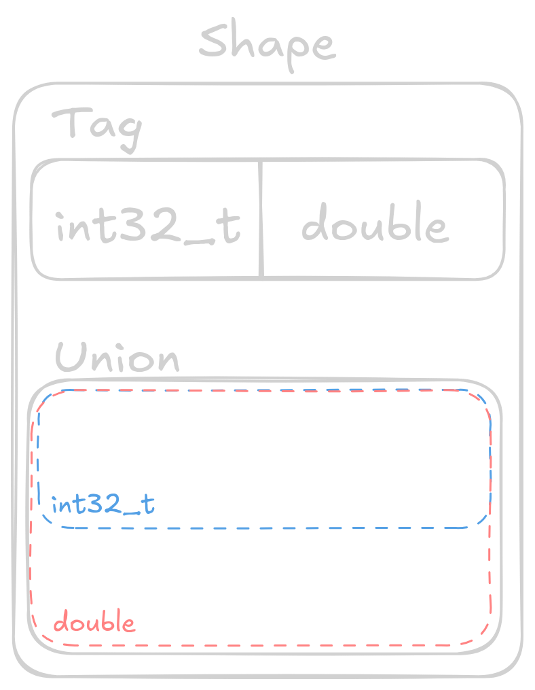
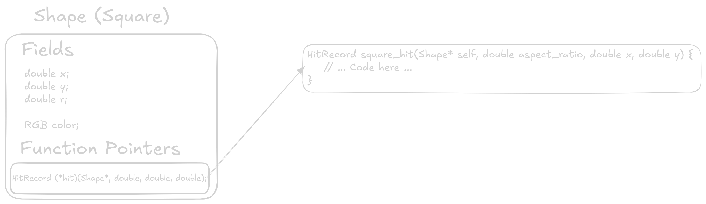
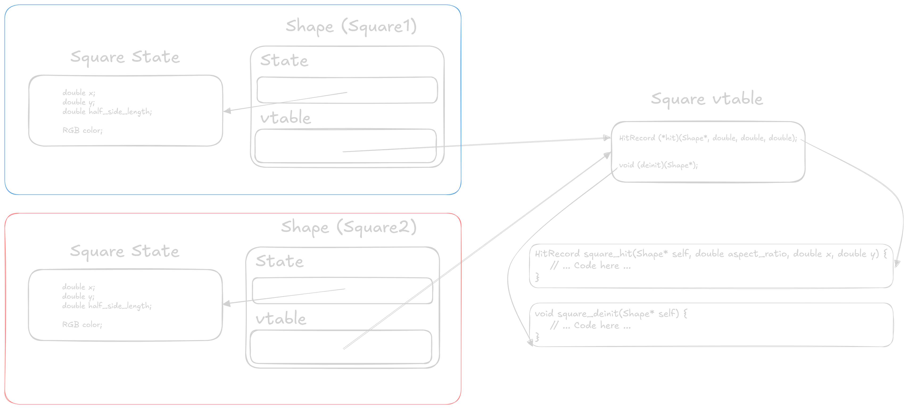

Interfaces
What is an interface?
An interface is a collection of behavior and attributes, allowing a programmer to write code that is agnostic to the concrete implementation sitting behind the interface. In that sense the interface acts as a sort of contract for the object. You’ll find examples of interfaces everywhere in programming and computer science in general.
Take for example the UNIX file descriptor. A file descriptor has a simple interface which we commonly interact with through the system calls close, read, and write (although more do exist). The process of getting a file descriptor changes depends on which type of file you’re attempting to open, a pipe is opened with pipe, a regular file with open, or a network socket with socket.
Going one level deeper the entire virtual file system (VFS) in Linux acts as an interface between programs and the file system. This allows users to write code that can be supported on any Linux system, no matter the choice of file system, or even bulk storage hardware.
Why use an interface?
As programmers we like interfaces because they allow us to abstract away implementation specific behavior, instead enabling us to write code against a common interface, making fewer assumptions about the concrete implementation. That last point is especially important, as writing a program against an interface (as long as that interface is kept slim and generic) can lead to an easier time adapting to a new concrete implementation.
Why not use an interface?
Common high-level programming languages can implement interfaces in inefficient ways. These inefficiencies come in the form of dynamic dispatch, and run-time type information (RTTI).
In order to get the usability benefits of an interface we generally hold pointers to the interface, instead of directly to the underlying class. This means that at runtime we need some way of knowing which base class this interface is representing, accomplished through RTTI, which exposes some information about which class is behind the interface.
While most of the time this isn’t a big deal, it can be used in performance negative ways, such as a dynamic_cast in C++, which allows down-casting into a specific class, but only if that class is compatible. This requires checking the types at run-time, which can be an expensive depending on the inheritance hierarchy.
Dynamic dispatch is just a way of saying that we don’t know which functions will be called at compile time, meaning at run-time we will decide which functions to call based on some information. This is in contrast to static dispatch, which is able to fully decide at compile-time which functions will be called.
From a CPU performance perspective dynamic dispatch is concerning as we’re asking the CPU to jump to an address that is only known at run-time. Unlike an unconditional branch, the CPU is unable to perfectly accurately predict (instead relying on its branch predictor) where it should execute its next instruction, which can lead to execution stalling, thus slowing our program.
How can we use an interface?
As we saw above there are both positive and negative aspects to using interfaces. The negatives tend to come from performance, and the positives come from usability. Yet, there is still one more aspect that we haven’t talked about, and that is user extensibility. Imagine if your web browser required recompilation every time you wanted to add a new browser plugin, not only would that be wasteful, it’s also entirely unnecessary now that we know about interfaces. As long as each plugin implements a common interface we can simply add it to a list of plugins that the browser calls as needed.
We can also talk about extensibility from the programmer perspective. Let’s imagine we want to render shapes to the screen, we could attempt to enumerate all possible shapes, but it’s unlikely that makes practical sense. Instead, what if we exposed a shape interface that our drawing program could use, allowing for future programmers to simply add another implementation of the interface. This is exactly the example we’ll explore in this article.
We’ll write a simple 2D renderer, capable of producing images like the following. 
We’ll walk through varying levels of “interfaces”, from the least extensible to the most extensible.
Base Implementation
We’ll be making small modifications to this program throughout the article to motivate the uses of interfaces, so it’s important to understand what it is doing without any interfaces.
#include <math.h> #include <stdbool.h> #include <stddef.h> #include <stdint.h> #include <stdio.h> #include <stdlib.h> #include <sys/time.h> #define MIN(x, y) ((x < y) ? x : y) #define MAX(x, y) ((x > y) ? x : y) typedef struct RGB { uint8_t r; uint8_t g; uint8_t b; } RGB; #define WHITE ((RGB){.r = 255, .b = 255, .g = 255}) #define RED ((RGB){.r = 255, .b = 0, .g = 0}) #define GREEN ((RGB){.r = 0, .b = 0, .g = 255}) #define BLUE ((RGB){.r = 0, .b = 255, .g = 0}) #define MISS_COLOR ((RGB){.r = 160, .g = 200, .b = 255}) // Whiteish at top of screen // Blue at bottom RGB miss_color(double x, double y) { RGB color = MISS_COLOR; double height_fraction = (y - -1) / 2; color.r += (255 - 160) * height_fraction; color.g += (255 - 200) * height_fraction; return color; } typedef struct Square { double x; double y; double radius; // Half side length RGB color; } Square; typedef struct Circle { double x; double y; double radius; RGB color; } Circle; typedef struct HitRecord { RGB color; bool hit; } HitRecord; Square square_init(double x1, double y1, double radius, RGB color) { return (Square){ .x = x1, .y = y1, .radius = radius, .color = color, }; } HitRecord square_hit(const Square* r, double aspect_ratio, double x, double y) { HitRecord hr = {0}; double x1 = r->x - r->radius * aspect_ratio; double x2 = r->x + r->radius * aspect_ratio; double y1 = r->y - r->radius; double y2 = r->y + r->radius; if (x >= x1 && x <= x2 && y >= y1 && y <= y2) { hr.color = r->color; hr.hit = true; } else { hr.color = miss_color(x, y); hr.hit = false; } return hr; } Circle circle_init(double x, double y, double r, RGB color) { return (Circle){ .x = x, .y = y, .radius = r, .color = color, }; } HitRecord circle_hit(const Circle* c, double aspect_ratio, double x, double y) { HitRecord hr = {0}; // Uses the elipse collision formula // \frac{(x-h)^2}{r_x^2} + \frac{(y-k)^2}{r_y^2} \leq 1 double lhs = (pow(x - c->x, 2) / pow(c->radius * aspect_ratio, 2)) + (pow(y - c->y, 2) / pow(c->radius, 2)); if (lhs <= 1) { hr.color = c->color; hr.hit = true; } else { hr.color = miss_color(x, y); hr.hit = false; } return hr; } int main(int argc, char* argv[]) { if (argc != 4) { fprintf(stderr, "usage: %s width height random_seed\n", argv[0]); return 1; } // Grab width and height from argv size_t width; size_t height; sscanf(argv[1], "%zu", &width); sscanf(argv[2], "%zu", &height); double aspect_ratio = (double)height / (double)width; // Grab random seed int seed; sscanf(argv[3], "%d", &seed); srand(seed); Circle circles[5] = { circle_init( (rand() / (RAND_MAX / 2.0)) - 1.0, (rand() / (RAND_MAX / 2.0)) - 1.0, rand() / (double)RAND_MAX / 4, (RGB){.r = rand() % 255, .g = rand() % 255, .b = rand() % 255}), circle_init( (rand() / (RAND_MAX / 2.0)) - 1.0, (rand() / (RAND_MAX / 2.0)) - 1.0, rand() / (double)RAND_MAX / 4, (RGB){.r = rand() % 255, .g = rand() % 255, .b = rand() % 255}), circle_init( (rand() / (RAND_MAX / 2.0)) - 1.0, (rand() / (RAND_MAX / 2.0)) - 1.0, rand() / (double)RAND_MAX / 4, (RGB){.r = rand() % 255, .g = rand() % 255, .b = rand() % 255}), circle_init( (rand() / (RAND_MAX / 2.0)) - 1.0, (rand() / (RAND_MAX / 2.0)) - 1.0, rand() / (double)RAND_MAX / 4, (RGB){.r = rand() % 255, .g = rand() % 255, .b = rand() % 255}), circle_init( (rand() / (RAND_MAX / 2.0)) - 1.0, (rand() / (RAND_MAX / 2.0)) - 1.0, rand() / (double)RAND_MAX / 4, (RGB){.r = rand() % 255, .g = rand() % 255, .b = rand() % 255}), }; Square squares[5] = { square_init( (rand() / (RAND_MAX / 2.0)) - 1.0, (rand() / (RAND_MAX / 2.0)) - 1.0, rand() / (double)RAND_MAX / 4, (RGB){.r = rand() % 255, .g = rand() % 255, .b = rand() % 255}), square_init( (rand() / (RAND_MAX / 2.0)) - 1.0, (rand() / (RAND_MAX / 2.0)) - 1.0, rand() / (double)RAND_MAX / 4, (RGB){.r = rand() % 255, .g = rand() % 255, .b = rand() % 255}), square_init( (rand() / (RAND_MAX / 2.0)) - 1.0, (rand() / (RAND_MAX / 2.0)) - 1.0, rand() / (double)RAND_MAX / 4, (RGB){.r = rand() % 255, .g = rand() % 255, .b = rand() % 255}), square_init( (rand() / (RAND_MAX / 2.0)) - 1.0, (rand() / (RAND_MAX / 2.0)) - 1.0, rand() / (double)RAND_MAX / 4, (RGB){.r = rand() % 255, .g = rand() % 255, .b = rand() % 255}), square_init( (rand() / (RAND_MAX / 2.0)) - 1.0, (rand() / (RAND_MAX / 2.0)) - 1.0, rand() / (double)RAND_MAX / 4, (RGB){.r = rand() % 255, .g = rand() % 255, .b = rand() % 255}), }; // RENDERING SCENE // Start by writing the PPM image header before writing each pixel printf("P3\n"); // PPM w/ ASCII format printf("%zu %zu\n", width, height); printf("255\n"); // Max value per channel of RGB struct timeval begin; gettimeofday(&begin, NULL); // Now loop through each pixel, printing its values as we go for (size_t row = 0; row < height; row++) { for (size_t col = 0; col < width; col++) { HitRecord hr; for (int depth = 5 - 1; depth >= 0; depth--) { // Calculate x/y pixel coords, y is flipped so we can render 0,0 // as the top left corner double x = ((double)col / ((double)width / 2) - 1); double y = -1 * ((double)row / ((double)height / 2) - 1); hr = circle_hit(&circles[depth], aspect_ratio, x, y); if (hr.hit) { // We hit something, therefore we can avoid checking any // other object goto PRINT; } } for (int depth = 5 - 1; depth >= 0; depth--) { // Calculate x/y pixel coords, y is flipped so we can render 0,0 // as the top left corner double x = ((double)col / ((double)width / 2) - 1); double y = -1 * ((double)row / ((double)height / 2) - 1); hr = square_hit(&squares[depth], aspect_ratio, x, y); if (hr.hit) { // We hit something, therefore we can avoid checking any // other object goto PRINT; } } PRINT: // We've either checked all object and hit nothing, or we broke out // because we hit something Either way we now need to write the // pixel color to our image printf("%hhu %hhu %hhu\n", hr.color.r, hr.color.g, hr.color.b); } } struct timeval end; gettimeofday(&end, NULL); double seconds = ((end.tv_usec + (1000000 * end.tv_sec)) - (begin.tv_usec + (1000000 * begin.tv_sec))) / 1000000.0; fprintf(stderr, "Rendering took %f seconds\n", seconds); };
The code above should be compiled and linked with the math library cc base_impl.c -o bin/renderer -lm. If you want to run the example shown above it was rendered with bin/renderer 1920 1080 45 >img/first.ppm, if you can view the .ppm directly that’s great! If not you can convert it to a png or jpg which can easily be view almost anywhere.

While the above example is a great starting point it’s entirely inflexible! Changing the order of shapes within a buffer requires recompilation, and the entire scene is composed of 5 squares and 5 circles. Many toy programs fall into this category, hard-coding their exact behavior for demonstration purposes. While this can be good for getting an initial understanding, the gap between this and a “real” program isn’t too much extra work. After a quick detour to show off function overloading in C we’ll come back to this point and make our scenes dynamic!
Function Overloading
If all we’re after is a more ergonomic programming experience, we can get some benefits of an interface just through function overloading. You’ll see this commonly with math libraries, which define operations on both integer and floating-point types, as well as vectors of varying lengths.
struct Vec2 { double x; double y; }; struct Vec2I { int x; int y; }; double vec_dot(Vec2 a, Vec2 b); int vec_dot(Vec2I a, Vec2I b); Vec2 vec_add(Vec2 a, Vec2 b); Vec2I vec_add(Vec2I a, Vec2I b); int main() { Vec2 a = (Vec2){.x = 1.2, .y = 3.4}; Vec2I b = (Vec2I){.x = 1, .y = 4}; double a_norm = vec_dot(a, a); int b_norm = vec_dot(b, b); }
Our “interface” is the collection of basic math operations, which are able to operate on all vector types. This is an example of static dispatch, in which each function call is known at compile time. Function overloading creates different functions for each implementation meaning that we’re never actually calling the same function.
In C function overloading is not a core part of the language, C11 added _Generic which allows users to explicitly specify function overloading. I’ve previously covered _Generic here, and how its name is slightly misleading. Translating the example above producing the following C code.
typedef struct Vec2 { double x; double y; } Vec2; typedef struct Vec2I { int x; int y; } Vec2I; double vec2_dot(Vec2 a, Vec2 b); int vec2i_dot(Vec2I a, Vec2I b); #define vec_dot(a, b) \ _Generic((a), \ Vec2: vec2_dot, \ Vec2I: vec2i_dot) (a, b) Vec2 vec2_add(Vec2 a, Vec2 b); Vec2I vec2i_add(Vec2I a, Vec2I b); #define vec_add(a, b) \ _Generic((a), \ Vec2: vec2_add, \ Vec2I: vec2i_add) (a, b) int main() { Vec2 a = (Vec2){.x = 1.2, .y = 3.4}; Vec2I b = (Vec2I){.x = 1, .y = 4}; double a_norm = vec_dot(a, a); int b_norm = vec_dot(b, b); }
Not a large change, but one that can be slightly annoying once our number of implementations for a function increases.
Updating our Renderer
The only change function overloading can give us for our use case is removing the square_ or circle_ from the beginning of the hit functions. This provides a small readability benefit, but when expanded to more shapes it could reduce the amount of context a programmer needs to keep around.
// ... #define hit(shape, aspect_ratio, x, y) \ _Generic((shape), Square *: square_hit, Circle *: circle_hit)( \ shape, aspect_ratio, x, y) int main(int argc, char* argv[]) { // ... double y = -1 * ((double)row / ((double)height / 2) - 1); hr = hit(&circles[depth], aspect_ratio, x, y); if (hr.hit) { // ... double y = -1 * ((double)row / ((double)height / 2) - 1); hr = hit(&squares[depth], aspect_ratio, x, y); if (hr.hit) { // ...
Upsides to Function Overloading
Function overloading provides native performance, because the overloading is really just a bit of syntax-sugar, allowing us to write the same function multiple times, with the compiler picker the correct implementation at compile-time. For hot sections of code (which do not need support for dynamic types), function overloading should always be your first choice.
Downsides to Function Overloading
The issue with this approach is that we still require separate data structures to store both circles and squares, meaning we cannot address the entire “scene” as a single array. So while function overloading gains us a bit of developer ergonomics, for this use case it does not gain us any new abilities, leaving us with a “static” scene renderer.
From a performance perspective this is obviously going to be the best choice, if you’re OK with a program locked to these particular constraints, requiring a recompile if any of these function calls need to change, not the best for a dynamic scene renderer.
Tagged Unions
We talked about RTTI (run-time type information) before and how it can have run-time performance impacts, stemming from complicated inheritance structures. However, if we avoid multiple levels of inheritance this problem all but goes away. Therefore, our implementation of RTTI should be as simple as possible, constraining us to constant time lookup.

We can accomplish this using what is known as a tagged union. The data structure is composed of a tag (enum) and a union. In C an enum is just an integer, allowing us to map a human-readable name to a number, which is exactly what we need for constant time lookup. The second part is a union, which is a data type constructed from a set of types, having storage to hold the largest of its constituent types. A union can hold exactly 1 data type at a time (ignoring any bit manipulation or type punning tricks), with access to any of the other data types producing possibly undesired (yet defined) results.
Updating Our Renderer
typedef struct Shape { enum { SQUARE, CIRCLE } tag; union { Square s; Circle c; } shape; } Shape;
Hopefully you can now see that we can utilize the enum to select which field of the union is active, providing us a primitive form of RTTI. The power of RTTI is that it allows us to utilize dynamic dispatch, granting us much more flexibility in our renderer.
In the above example we’re utilizing the same Circle and Square structures as the initial example, with SQUARE being equal to 0 and CIRCLE being equal to 1. At run-time we can now use the tag (indicating the currently held type) to decide which function to call.
HitRecord hit(const Shape* s, double aspect_ratio, double x, double y) { switch (s->tag) { case SQUARE: return square_hit(&s->shape.s, aspect_ratio, x, y); case CIRCLE: return circle_hit(&s->shape.c, aspect_ratio, x, y); } }
Adding more shapes to our system is now as simple as defining a struct to hold their data, and providing functions to initialize/interact with them.
At this point we haven’t really gained a ton over our previous example, we actually need to store these Shape objects within the same data structure to see the full benefits. On that note, we can now create a single initializer to make our lives easier moving forward.
Shape shape_random() { if (rand() / (double)RAND_MAX < 0.5) { // Make circle return (Shape){ .tag = CIRCLE, .shape.c = circle_init( (rand() / (RAND_MAX / 2.0)) - 1.0, (rand() / (RAND_MAX / 2.0)) - 1.0, rand() / (double)RAND_MAX / 4, (RGB){.r = rand() % 255, .g = rand() % 255, .b = rand() % 255}), }; } else { // Make square return (Shape){ .tag = SQUARE, .shape.s = square_init( (rand() / (RAND_MAX / 2.0)) - 1.0, (rand() / (RAND_MAX / 2.0)) - 1.0, rand() / (double)RAND_MAX / 4, (RGB){.r = rand() % 255, .g = rand() % 255, .b = rand() % 255}), }; } }
The shape_random function creates either a Square or a Circle depending on some value known at run-time, which in this case is a simple random number. We’ll utilize this initializer to create an entire scene of Shape objects.
// ... srand(seed); Shape scene[10]; const size_t scene_size = 10; for (size_t i = 0; i < scene_size; i++) { scene[i] = shape_random(); } // RENDERING SCENE // ...
Lastly, we need to use our new hit function to calculate collisions with any of the Shape objects within our scene.
// ... // Now loop through each pixel, printing it's values as we go for (size_t row = 0; row < height; row++) { for (size_t col = 0; col < width; col++) { HitRecord hr; for (int depth = scene_size - 1; depth >= 0; depth--) { // Calculate x/y pixel coords, y is flipped so we can render 0,0 // as the top left corner double x = ((double)col / ((double)width / 2) - 1); double y = -1 * ((double)row / ((double)height / 2) - 1); hr = hit(&scene[depth], aspect_ratio, x, y); if (hr.hit) { // We hit something, therefore we can avoid checking any // other object break; } } // ...
Upsides to Tagged Unions
We’re finally able to treat the entire scene as one set of homogeneous objects, simplifying the interactions to a simple hit function call. At run-time hit then decides which of the specialized circle_hit or square_hit functions to call. This allows our entire program to be much more flexible, even permitting changing the scene at run-time, without having to recompile any code.

If you need dynamic dispatch with minimal overhead, tagged unions are the way to go. Let’s look at the generated assembly to see why.
Generated Assembly for hit
hit: lw a5,0(a0) beq a5,zero,.L2 li a4,1 beq a5,a4,.L3 jr ra .L2: addi a0,a0,8 tail square_hit .L3: addi a0,a0,8 tail circle_hit
Looking at the hit dispatch function we see 3 basic blocks of instructions. Remember that the hit function has type signature HitRecord hit(const Shape* s, double aspect_ratio, double x, double y), and we can see that the first instruction (lw) is loading that tag of our tagged union into a register. In this simple example we can see that the compiler decided to transform our switch statement into an if-else chain.
The first branch checks if the tag is 0 (SQUARE), if so we jump to .L2. When we jump to .L2 we bump the original Shape* pointer forward by 8 bytes so that it points at the beginning of the union, then we can finally call the square_hit function.
If we’re not a Square we then load the immediate value 1 (CIRCLE), and again branch to the associated Circle code if equal.
If neither of the above circle/square cases match we restore the stack and return nothing. We can ignore this case for now, assuming we always call the function with a valid shape. Ignoring the final section that we will never execute, hit consists of 8 instructions, with 2 branches to locations within the function, and 2 function calls.
Downsides to Tagged Unions
While tagged unions provide the closest thing to function overloading in terms of performance, they only offer marginal gains in terms of developer ergonomics. Tagged unions are quick because they centralize the function dispatch to a single location, with a single memory load providing the tag to decide which function to call. This centralization is also the reason that it’s not an extensible solution.
If we want to add more shapes in the future we not only have to provide a structure to hold the data (along with the functions to interact with this data), we also have to modify the tagged union structure (and its associated dispatch functions) to add the new tag. For a small code base where the interface is easily exposed, this isn’t too much of a problem, but it isn’t always feasible to expose an interface to 3rd party developers.
Imagine our 2D renderer as an open source project, we currently support rendering squares and circles. If another developer comes along and wants to add support for triangles they’d have to modify our source code directly, and if we don’t want to add their triangles, they’d be forced to fork the code and maintain their own version with support for triangles.
While this example is a little extreme we can simplify it further to a single developer team. Having to rewrite your dispatch function each time means that developers are less likely to be fully autonomous, as they have to modify a central implementation. This isn’t the biggest issue, but it exposes the trade-offs of developer ergonomics versus application performance.
Function Pointers
How can we provide much more flexibility to developers want to implement our interface? The answer is through function pointers.
In C we can provide the address of any function as a function pointer, which as a type signature equal to that of the function. Function pointers allow us to dynamically execute a section of code depending on a value that may only be known at run-time. We’ll see why I say “may” a little bit later once we look at the generated assembly.
Updating Our Renderer
The first step in updating our renderer is to change the Shape structure defined in the previous section. We will be moving the fields of Square and Circle into the Shape struct, as well as adding a function pointer (or method) to the structure.
typedef struct Shape { double x; double y; double radius; RGB color; HitRecord (*hit)(struct Shape* state, double aspect_ratio, double x, double y); } Shape;

This way of defining an interface means that each instance of the shape interface, will also carry the entire implementation of that specific shape. It will be helpful to look at the definitions of square_init and circle_init to see this in practice.
Shape square_init(double x1, double y1, double radius, RGB color) { return (Shape){ .x = x1, .y = y1, .radius = radius, .color = color, .hit = square_hit, }; } Shape circle_init(double x, double y, double r, RGB color) { assert(x >= -1 && x <= 1); assert(y >= -1 && y <= 1); return (Shape){ .x = x, .y = y, .radius = r, .color = color, .hit = circle_hit, }; } Shape shape_random() { if (rand() / (double)RAND_MAX < 0.5) { // Make circle return circle_init( (rand() / (RAND_MAX / 2.0)) - 1.0, (rand() / (RAND_MAX / 2.0)) - 1.0, rand() / (double)RAND_MAX / 4, (RGB){.r = rand() % 255, .g = rand() % 255, .b = rand() % 255}); } else { // Make square return square_init( (rand() / (RAND_MAX / 2.0)) - 1.0, (rand() / (RAND_MAX / 2.0)) - 1.0, rand() / (double)RAND_MAX / 4, (RGB){.r = rand() % 255, .g = rand() % 255, .b = rand() % 255}); } }
Each of the initialization functions now returns a Shape with the same data as before, assigning the correct hit implementation depending on which shape we’re creating. Let’s look at how the square_hit and circle_hit functions have changed.
HitRecord square_hit(Shape* self, double aspect_ratio, double x, double y) { HitRecord hr = {0}; double x1 = self->x - self->radius * aspect_ratio; double x2 = self->x + self->radius * aspect_ratio; double y1 = self->y - self->radius; double y2 = self->y + self->radius; if (x >= x1 && x <= x2 && y >= y1 && y <= y2) { hr.color = self->color; hr.hit = true; } else { hr.color = miss_color(x, y); hr.hit = false; } return hr; } HitRecord circle_hit(Shape* self, double aspect_ratio, double x, double y) { HitRecord hr = {0}; // Uses the elipse collision formula // \frac{(x-h)^2}{r_x^2} + \frac{(y-k)^2}{r_y^2} \leq 1 double lhs = (pow(x - self->x, 2) / pow(self->radius * aspect_ratio, 2)) + (pow(y - self->y, 2) / pow(self->radius, 2)); if (lhs <= 1) { hr.color = self->color; hr.hit = true; } else { hr.color = miss_color(x, y); hr.hit = false; } return hr; }
Each hit function now takes a Shape* pointer, which by convention we name self. Any behavior specific to an individual shape has remained with its hit implementation, with shapes now sharing the data held within the Shape structure.
The last change needed is calling each shape’s associated hit function through it’s function pointer.
// ... Shape* object = &scene[depth]; hr = object->hit(&scene[depth], aspect_ratio, x, y); if (hr.hit) { // ...
Because we store each function pointer within the structure, we can simply reference that pointer, and call it providing the specific arguments, including the self pointer.
Upsides to Function Pointers
Transitioning our code to function pointers didn’t require changing much of the code, but it grants us much more flexibility than either of the previous versions.
Now, a developer can quickly add a shape that fulfills our interface without requiring any changes to the central code. In fact, there is now no central code, only the structure definition for Shape counting as “central”. We’ve now enabled a developer add support for a Triangle class, which would have required significant code changes previously.
As the renderer developer I no longer have to concern myself with shapes at all, aside from calling their associated hit function.
Generated Assembly for hit
Writing a simple hit wrapper allows us to analyze the generated assembly for this subroutine.
hit: ld a5,32(a0) addi sp,sp,-16 addi sp,sp,16 jr a5
At first glance it looks like a lot less code, but upon closer inspection we’re jumping to an address held within a register. This is much different than jumping to a label directly (as would happen with a function call), as it can be difficult for a CPU to predict which path to take at run-time. When we get to performance analysis section we’ll see how this impacts overall run-time.
A Quick Aside on Monomorphization
If you like the ergonomics of an interface, but can’t handle the performance impacts of dynamic dispatch, you may be able to have the benefits of function pointers, and the performance of overloading.
We’ll look at the following small code snippet which utilizes our latest interface with function pointers.
int small_render() { Shape square = square_init(0, 0, 0, (RGB){}); Shape circle = circle_init(0, 0, 0, (RGB){}); square.hit(&square, 0, 0, 0); circle.hit(&circle, 0, 0, 0); }
We’re passing 0 for all parameters to simplify the generated assembly. Let’s look at the generated assembly when using -Os.
small_render: fmv.d.x fa2,zero addi sp,sp,-112 sh zero,0(sp) sb zero,2(sp) ld a1,0(sp) fmv.d fa1,fa2 fmv.d fa0,fa2 addi a0,sp,16 sd ra,104(sp) call square_init fmv.d.x fa2,zero sh zero,8(sp) sb zero,10(sp) ld a1,8(sp) fmv.d fa1,fa2 fmv.d fa0,fa2 addi a0,sp,56 call circle_init fmv.d.x fa2,zero ld a5,48(sp) addi a0,sp,16 fmv.d fa1,fa2 fmv.d fa0,fa2 jalr a5 fmv.d.x fa2,zero ld a5,88(sp) addi a0,sp,16 fmv.d fa1,fa2 fmv.d fa0,fa2 jalr a5 ld ra,104(sp) addi sp,sp,112 jr ra
We can see that after initialization we use the same mechanism as before to load the function pointer into a register before jumping to it an executing the associated code. Compiling with -O3 enables further optimizations that can call the hit functions directly.
small_render: fmv.d.x fa2,zero addi sp,sp,-80 lui a5,%hi(square_hit) fmv.d fa1,fa2 fmv.d fa0,fa2 addi a5,a5,%lo(square_hit) addi a0,sp,24 sd ra,72(sp) fsd fa2,24(sp) fsd fa2,32(sp) fsd fa2,40(sp) sd a5,56(sp) sh zero,48(sp) sb zero,50(sp) call square_hit fmv.d.x fa2,zero mv a5,a0 addi a0,sp,24 fmv.d fa1,fa2 fmv.d fa0,fa2 sw a5,8(sp) call circle_hit ld ra,72(sp) sw a0,16(sp) addi sp,sp,80 jr ra
Unless you really like the ergonomics of doing this, at least in C it doesn’t make sense. However, this same concept applies in other high level languages such as C++ which can perform monomorphization to virtual function calls if the compiler can trace their concrete implementations during the compilation process. While we’re here, let’s look if a similar transformation can is applied to our tagged union solution.
small_render: fmv.d.x fa2,zero addi sp,sp,-128 addi a0,sp,40 fmv.d fa1,fa2 fmv.d fa0,fa2 sd ra,120(sp) sd zero,40(sp) sd zero,48(sp) sd zero,56(sp) sh zero,64(sp) sb zero,66(sp) sd zero,80(sp) sd zero,88(sp) sd zero,96(sp) sh zero,104(sp) sb zero,106(sp) call square_hit fmv.d.x fa2,zero sext.w a0,a0 sw a0,0(sp) fmv.d fa1,fa2 fmv.d fa0,fa2 addi a0,sp,80 call circle_hit ld ra,120(sp) sext.w a0,a0 sw a0,8(sp) addi sp,sp,128 jr ra
Even on -Os the compiler is able to monomorphize the function call, and it gets even more shocking when using -O3. The compiler entirely ignores any function call and simply traces through the entire call chain to produce the final results at compile-time.
small_render: addi sp,sp,-32 li a4,16777216 li a5,16769024 sw a4,0(sp) addi a5,a5,975 sw a5,8(sp) addi sp,sp,32 jr ra
Downsides to Function Pointers
The biggest downside to function pointers is they are an indirect branch, which requires accurate prediction to take advantage of speculative execution keeping the CPU’s pipeline full. For our small example where we iterate through the scene in a consistent order a branch predictor doesn’t have too hard of a job knowing which function to execute.
With a larger code base, and more implementations of our interface, we’d likely see further slowdowns as the branch predictors job gets harder.
Another downside to this specific implementation of function pointers is that we’ve coupled the implementation of an object with each instance of that object. For example, each Square created with square_init has to carry around a pointer for each function in the interface. So our random scenes likely have 5 duplicate square_hit pointers, and 5 duplicate circle_hit pointers.
C++ solves this (at least in the simple single inheritance case) by creating a vtable for each implementation of an interface, and then each instance of that class would have a single pointer to the vtable. This is the common case of the space versus time trade off that we often see in computer science.
Having each instance hold the function pointers likely increases execution speed, while also increasing the size of each instance. In contrast, storing function pointers in a vtable requires a second level of indirection, possibly slowing execution while making each instance much smaller.
Full Interface w/ a vtable
Finally, we arrive at the full interface implementation in C. The main differences from the previous example is that we’ve moved the function pointers into their own vtable, and we now have each implementation of the class holding its own fields, potentially allowing for private data.
Updating Our Renderer
First we need to update our Shape structure to reference the new dispatch vtable, as well as a void* to hold and data associated to the instance.
typedef struct Shape { void* state; const struct vtable { HitRecord (*hit)(struct Shape* self, double aspect_ratio, double x, double y); void (*deinit)(struct Shape* self); }* vtable; } Shape;
The vtable can be declared either outside of inside the Shape structure, as long as it is visible outside so that each implementation can reference it. Also note that the vtable is marked as const, which in combination with marking each of the implementation vtables const will allow the compiler to better optimize our code.

You’ll also notice that we had to add a deinit method to our interface. This is because each implementation of the interface now holds onto its own private data, which could be differently sized based upon the implementation. This deinit method allows a specific implementation a chance to clean up any resources it may hold on to. In this example the deinit methods free the memory allocated in the init function.
Next we can update our Square and Circle implementations, which requires forward declaring each of the “methods” as we’ll see (the code for Circles requires the same transformation, therefore it is not shown).
HitRecord square_hit(Shape* self, double aspect_ratio, double x, double y); void square_deinit(Shape* self); static const struct vtable square_vtable = (struct vtable){.hit = square_hit, .deinit = square_deinit}; // Definitions for square_hit and square_deinit below
Then we can update the square_init function to create a new instance of the Shape struct.
Shape square_init(double x1, double y1, double radius, RGB color) { SquareState* s = (SquareState*)malloc(sizeof(*s)); *s = (SquareState){ .x = x1, .y = y1, .half_side_length = radius, .color = color, }; return (Shape){ .state = s, .vtable = &square_vtable, }; }
Note that we reference the same square_vtable for each square that we instantiate. This reduces the size of each square, as we’re trading off another level of indirection for a small structure. Speaking of the second level of indirection, we can see that with our last change needed to the renderer.
// ... Shape* object = &scene[depth]; hr = object->vtable->hit(&scene[depth], aspect_ratio, x, y); if (hr.hit) { // ...
We changed object->hit() to object->vtable->hit(), and we’ll see the performance impacts of this shortly.
Upsides to Full Interfaces w/ a vtable
By splitting our “methods” and data into 2 separate objects we gained the ability to have private data that is specific to a class. Whether this is a desired feature is up to you. Full interfaces are also now a constant size, with a void* pointer to internal data, and vtable* to our methods.
This is the most flexible version of our Shape interface that we’ve seen so far, allowing each implementation to have entirely separate data and behavior.
Generated Assembly for hit
The generated assembly makes the second level of indirection obvious as we see an initial load to get the vtable* pointer, and then a second load for the hit function pointer.
hit: ld a5,8(a0) addi sp,sp,-16 ld a5,0(a5) addi sp,sp,16 jr a5
We can also check if the compiler is able to monomorphize our code as it did in the previous 2 examples.
small_render: fmv.d.x fa2,zero addi sp,sp,-80 sh zero,0(sp) sb zero,2(sp) fmv.d fa1,fa2 fmv.d fa0,fa2 ld a0,0(sp) sd ra,72(sp) call square_init fmv.d.x fa2,zero sh zero,8(sp) sb zero,10(sp) fmv.d fa1,fa2 fmv.d fa0,fa2 sd a0,32(sp) ld a0,8(sp) sd a1,40(sp) call circle_init fmv.d.x fa2,zero ld a5,40(sp) sd a0,48(sp) fmv.d fa1,fa2 fmv.d fa0,fa2 ld a5,0(a5) addi a0,sp,32 sd a1,56(sp) jalr a5 ld a5,56(sp) fmv.d.x fa2,zero sw a0,16(sp) ld a5,0(a5) fmv.d fa1,fa2 fmv.d fa0,fa2 addi a0,sp,32 jalr a5 ld ra,72(sp) sw a0,24(sp) addi sp,sp,80 jr ra
Sadly, with -Os optimizations the compiler is no longer able to trace its way through our call chain to monomorphize our function. That’s not to say that it will never be possible, but each level of indirection makes the compilers job harder. Again, using -O3 the compiler can trace the calls, and replaces the values with their computed results.
small_render: addi sp,sp,-32 li a4,16777216 li a5,16769024 sw a4,0(sp) addi a5,a5,975 sw a5,8(sp) addi sp,sp,32 jr ra
Downsides to Full Interfaces w/ a vtable
For our final interface implementation the downsides come in terms of performance. Having 2 levels of indirection on each method call certainly adds cache pressure, and will likely slow down execution.
However, other than performance, this is a good model for working in teams, especially when the user of this interface does not need to care about implementation internals.
Performance Analysis
The following are results from rendering a 25000x25000 image with seed 45. All examples were compiled with -O3 -ffast-math -DNDEBUG -march=native -flto -static. Results were measured on a 12th Gen Intel Core i5-12400F. The individual perf stat outputs for each compiler can be found under interfaces/gcc_perf.html and interfaces/clang_perf.html.
x86-64 Desktop Computer
| Compiler | Implementation | Execution Time | Cache References K/sec | Cache Miss % | Instructions per Cycle | Branches G/sec | Branch Miss % |
|---|---|---|---|---|---|---|---|
| gcc | Function Overloading | 43.79 | 61.410 | 13.50% | 4.75 | 3.932 | 0.0040% |
| Tagged Unions | 47.90 | 60.166 | 14.18% | 4.75 | 3.905 | 0.0041% | |
| Function Pointers | 55.65 | 65.672 | 14.38% | 4.97 | 3.699 | 0.0037% | |
| Full Interface | 55.20 | 65.170 | 13.16% | 5.04 | 3.728 | 0.0038% | |
| clang | Function Overloading | 41.94 | 61.633 | 12.36% | 5.05 | 4.001 | 0.0033% |
| Tagged Unions | 43.35 | 59.334 | 11.06% | 5.13 | 4.067 | 0.0031% | |
| Function Pointers | 57.00 | 57.593 | 12.90% | 4.80 | 3.390 | 0.0037% | |
| Full Interface | 57.24 | 59.900 | 12.02% | 4.84 | 3.376 | 0.0038% |
As we would expect, our 4 implementations decrease in performance as they get more complicated and abstract. The key highlights are that moving from an entirely static implementation (function overloading) to our first dynamic method (tagged unions) only incurs a 9% performance decrease under gcc, and a 3.5% decrease with clang. If your program requires some form of dynamic dispatch and is performance sensitive, tagged unions are likely the way to go.
Interestingly the difference between a pure function pointer implementation and the full interface is marginal, even going the way of the full interface when compiled using gcc. However, either implementation creates slowdowns between 15-25%, something to keep in mind when utilizing similar constructs in languages that hide these implementation details from you.
RISC-V Desktop Computer
Unfortunately, the RISC-V computer I have access to currently does not support perf on its latest kernel. However, we can still analyze performance by looking at time to render, which should give us a point of comparison across the 4 different implementations. All the examples in this case were compiled with the following command, and times reported are for rendering a 3840x2160 image, again with seed 45.
gcc \ -O3 \ -march=rv64imafdcv_zicbom_zicboz_zicntr_zicond_zicsr_zifencei_zihintpause_zihpm_zfh_zfhmin_zca_zcd_zba_zbb_zbc_zbs_zkt_zve32f_zve32x_zve64d_zve64f_zve64x_zvfh_zvfhmin_zvkt \ -ffast-math \ -DNDEBUG \ -static \ -flto \ file.c \ -o binary
| Program | Mean | Std. dev. |
|---|---|---|
| Generic | 7.112632 | 0.016333 |
| Tagged Unions | 8.591887 | 0.020454 |
| Function Pointers | 13.136117 | 0.038011 |
| Full Interface | 13.164754 | 0.011364 |
The performance differences here are much more pronounced, with the shift from tagged unions to function pointers (35%) being much larger than before. As a point of comparison rendering this same scene of the Intel processor mentions above takes around 0.62 seconds. On lower power hardware it is common to see these kinds of gaps when utilizing higher level language constructs such as dynamic dispatch.
Conclusions
Hopefully you’re now that you’ve seen the inner workings of an interface you can make more informed decisions about which type of dynamic dispatch you should be using in your upcoming project.
Assuming dynamic dispatch is an absolute requirement, tagged unions will give you the highest performance at the cost of slightly worse developer ergonomics. However, if performance is a secondary or even tertiary concern, utilizing a full interface can provide an environment where working with other developers is more easily facilitated through the extensibility an interface provides.